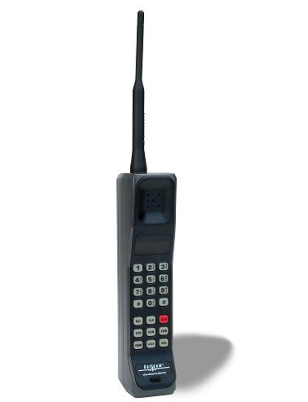
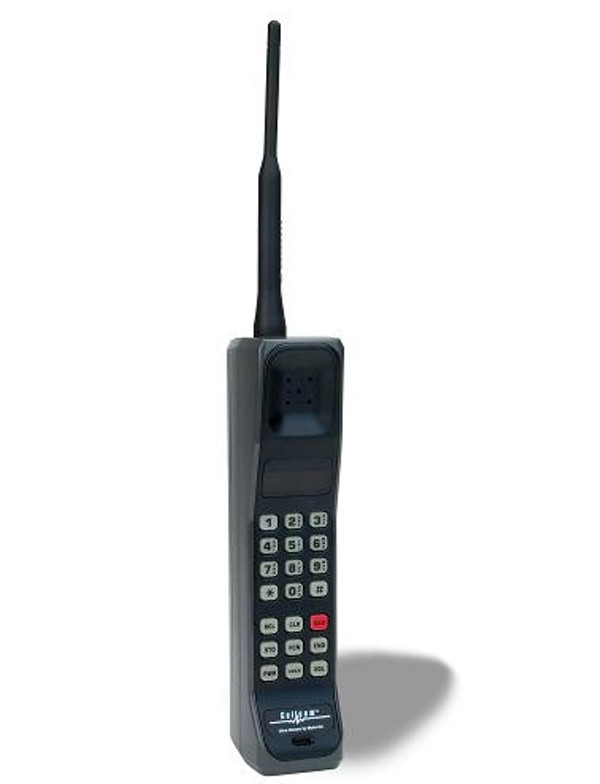

invenstion of telephone
It was at this time, 1876–1877, that a new invention called the telephone emerged. It is not easy to determine who the inventor was. Both Alexander Graham Bell and Elisha Gray submitted independent patent applications concerning telephones to the patent office in Washington on February 14, 1876. Bell, in Boston at the time, was represented by his lawyers and had no idea that the application had been submitted.
Gray’s application arrived at the patent office a few hours before Bell’s, but Bell’s lawyers insisted on paying the application fee immediately; as a result, the heavily burdened office registered Bell’s application first.
Bell’s patent was approved and
officially registered on March 7, and three days later the famous call is said to have been made when Bell’s summons to his assistant (“Mr Watson, come here. I want to see you.”) confirmed that the invention worked.
Alexander Graham Bell, one year
younger than Lars Magnus Ericsson, had been born in Edinburgh. Bell’s interest in telephony came through his mother, who was deaf, and his father, Alexander Melville Bell
who was a teacher of elocution, famous for the phonetic br transcription system he had developed to help the deaf learn to speak (and which he described in a book entitled Visible Speech). The Bell family migrated to Canada in 1870; two years later Alexander Melville Bell was offered a teaching post at a school for the deaf in Boston in the United States
but he successfully recommended his son for the post instead. Father and son were at this time working together to try to discover whether sound could be made visible for the deaf with the help of < class="br">But many others had already been pursuing the idea of telephony for years. A resolution of the US House of Representatives in June 2002 claimed that Bell had nefariously acquired and exploited an apparatus, the “teletrophono”, invented by Antonio Meucci long before Bell and Gray.
 
